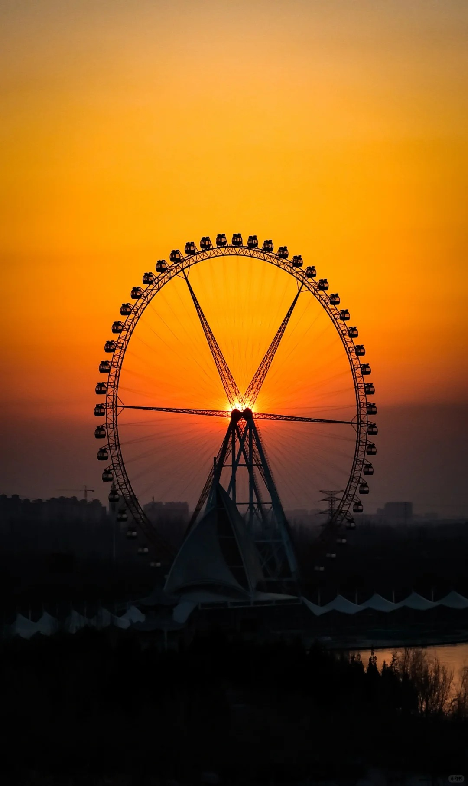
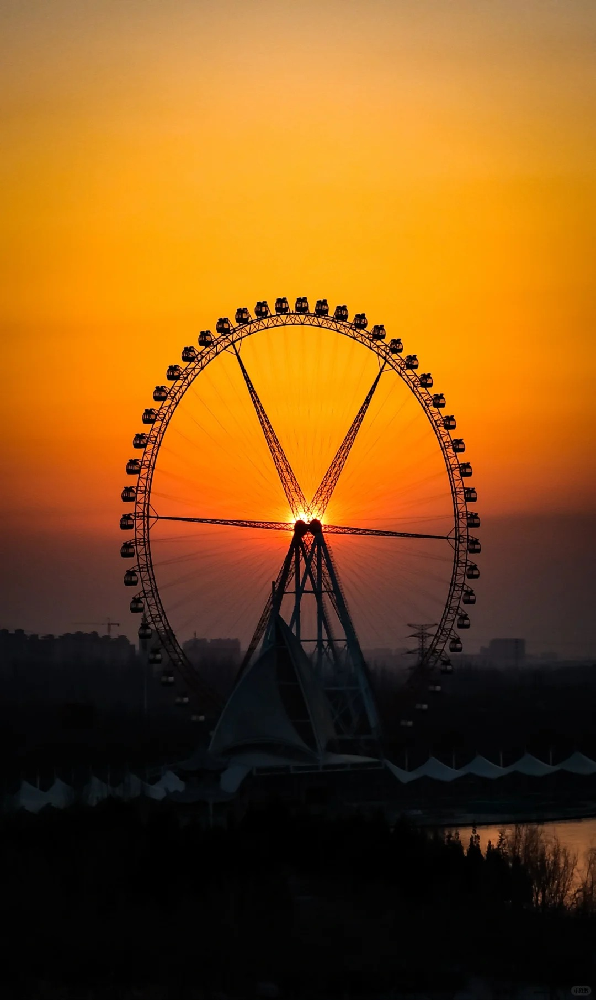

贺兰山
西部影城
腾格里沙漠
地球之心
西夏王陵
览山公园
贺兰山
贺兰山国家森林公园拥有丰富的自然景观和独特的人文景观。游客不仅可以在贺兰山上欣赏迷人的夜空和日出，还有机会看到马鹿、山羊、兰马鸡等受国家保护的重要野生动物。
贺兰山的石窟壁画讲述了 3000 至 10000 年前古代人类的生产和生活，如放牧、狩猎、祭祀、战争、娱乐舞蹈、等。总共记录了 19,752 幅单独的洞穴壁画。
当温度降至零度以下时，山中的溪流和瀑布将开始结冰，形成冰瀑。这些冰瀑通常在每年的冬季和早春之间形成，随着温度的波动，冰的厚度和形状也会发生变化。

西部影城
镇北堡，西部影视之乡，是中国西北地区的影视制作基地，原来是明清时期的边堡所在地，在中国众多的影视城市中，这座西部影城的特点是质朴、原始、粗犷、荒凉、民俗化。是中国三大影视城市之一。


腾格里沙漠

腾格里沙漠是中国第四大沙漠，总面积超过 30,000 平方公里。在腾格里沙漠的深处，沙丘、湖盆、绿草如茵的海滩、平缓的丘陵和平原交错错落。这是露营、观星、篝火晚会、骑骆驼和越野骑行的好地方。

地球之心
在腾格里沙漠深处，有一个鲜红色的湖泊——乌兰湖——它看起来像鲜红色的、跳动的地球心脏。这个地方的生态气候干燥，降雨量少，这有助于盐湖的形成以及湖中微生物的生存和繁殖。这些微生物释放出类胡萝卜素，数以万计的类胡萝卜素在湖中积累，当暴露在阳光下时，湖水会变成红色。
在它旁边，还有四个湖泊，统称为五个湖泊。
吉他湖
龙眼翡翠湖


枫叶湖
蛋黄湖
西夏王陵
西夏王陵是中国西夏历代的帝王陵和皇家陵墓。它是中国现存最大、最完整的皇家陵园之一。景区占地面积超过 58 平方公里。有 9 座帝陵和 200 多座墓碑。规模很大，布局也很朴素。

旁边是西夏博物馆,这是中国第一个以西夏陵墓为背景,更全面、更系统地反映西夏历史的专题博物馆,建筑面积达9000平方米。藏品8700件文物 (套) 分为建筑元素、石器、瓷器,硬币,铜和铁工具,绘画,雕塑等。


览山公园
岚山公园的主体建筑采用古罗马斗兽场的风格建造，总体呈扇形结构。目前，它是中国最大的圆形剧场，可以举办大型活动、戏剧表演和体育比赛。日落时分很美，是看日落的最佳地点。

 
